전자계산기조직응용기사 (2010-03-07 기출문제)
1과목: 전자계산기 프로그래밍
1. C 언어에서 저장 클래스를 명시하지 않은 변수는 기본적으로 어떤 기억 클래스로 간주되는가?
- Auto
- Register
- Static
- Extern
(정답률: 56%)

2. 프로그램 내에서 양쪽 오퍼랜드에 기억된 내용을 바꾸어야 할 때 사용하는 어셈블리어 명령은?
- XCHG
- EJECT
- INC
- DEC
(정답률: 66%)
3. PLC의 정상 동작을 위한 환경조건의 고려사항으로 옳지 않은 것은?
- PLC는 전원 트랜스 등의 발열체에서 가까이 하며, 발열 부품보다 위쪽에 취부 한다.
- 필요에 따라 강제 냉각시킨다.
- 통풍구를 배선 덕트나 다른 기기에 막히지 않도록 하여 충분한 간격을 유지한다.
- 전원 OFF시 제어반내의 온도하강에 따른 결로현상으로 습기제거도 필요하다.
(정답률: 72%)
4. 어셈블리어에서 어떤 기호적 이름에 상수 값을 할당하는 명령은?
- ASSUME
- ORG
- EQU
- EVEN
(정답률: 73%)
5. 객체지향 프로그래밍에 대한 설명으로 거리가 먼 것은?
- 프로그래밍이 데이터 중심이 아니라 절차 중심이어야 한다.
- 코드와 자료를 함께 묶어 외부의 간섭 또는 잘못된 사용으로부터 안전하게 유지해 주는 캡슐화가 있다.
- 하나의 인터페이스로 일반적인 클래스 행위들을 사용할 수 있도록 하는 다형성이 있다.
- 하나의 객체에서 다른 객체의 성질을 이어받을 수 있는 상속성이 있다.
(정답률: 84%)
6. C 언어의 특징으로 옳지 않은 것은?
- 컴파일 과정 없이 실행 가능하다.
- 시스템 프로그래밍 언어로 적합하다.
- 이식성이 높은 언어이다.
- 다양한 연산자를 제공한다.
(정답률: 75%)
7. 종래에 사용하던 제어반 내의 릴레이 타이머, 카운터 등의 기능을 IC, 트랜지스터 등의 반도체 소자로 대체시켜 기본적인 시퀀스 제어 기능에 수치 연산 기능을 추가하여 프로그램 제어가 가능하도록 한 자율성이 높은 제어장치는?
- PAC
- PL/1
- PLC
- PRC
(정답률: 73%)
8. C 언어에서 이스케이프 문자의 약호가 잘못된 것은?
- \t : tab
- \b : backspace
- \f : new line
- \o : null character
(정답률: 79%)
9. 어셈블리어에서 주석(Comment)의 시작을 나타내는 기호는?
- ;
- #
- %
- $
(정답률: 52%)
10. PLC 하드웨어 구성 요소 중 외부로부터 수신되는 다양한 신호를 CPU가 처리할 수 있는 신호레벨로 변환시켜 연산부에 전송하는 역할을 하는 것은?
- 제어 연산부
- 메모리부
- 입력부
- 출력부
(정답률: 33%)
11. 기계어에 대한 설명으로 틀린 것은?
- 각 컴퓨터마다 모두 같은 기계어를 가진다.
- 컴퓨터가 해석할 수 있는 1 또는 0의 2진수로 이루어진다.
- 실행할 명령, 데이터, 기억 장소의 주소 등을 포함한다.
- 프로그램 작성이 어렵고 복잡하다.
(정답률: 77%)
12. 프로그래밍 언어의 해독 순서로 옳은 것은?
- 컴파일러 → 로더 → 링커
- 링커 → 로더 → 컴파일러
- 로더 → 컴파일러 → 링커
- 컴파일러 → 링커 → 로더
(정답률: 75%)
13. C 언어의 비트 단위 연산자 중 1의 보수화와 관계되는 것은?
- <<
- |
- &
- ~
(정답률: 73%)
14. 원시 프로그램을 기계어 프로그램으로 번역하는 대신에 기존의 고수준 컴파일러 언어로 전환하는 역할을 수행하는 것은?
- Loader
- Linker
- Preprocessor
- Cross Compiler
(정답률: 59%)
15. 어셈블리어에서 다음 설명에 해당하는 명령은?
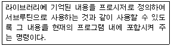
- INCLUDE
- EJECT
- CREF
- NOP
(정답률: 77%)
16. 변수의 값이 저장된 기억 장소, 위치를 확인할 수 있는 것은 변수의 어떤 구성 요소에 의해서 가능한가?
- 이름
- 값
- 참조기능
- 대입기능
(정답률: 69%)
17. 원시 프로그램을 어셈블 할 때 어셈블러가 해야 할 동작을 지시하는 명령을 무엇이라고 하는가?
- 리터럴 명령
- 기호 명령
- 기계 명령
- 어셈블리 명령
(정답률: 66%)
18. 매크로 프로세서의 기본적 수행 기능에 해당하지 않는 것은?
- 매크로 호출 인식
- 매크로 정의 저장
- 매크로 정의 확장
- 매크로 호출 확장 및 인수 치환
(정답률: 46%)
19. 시스템이 알고 있는 특수한 기능을 수행하도록 이미 용도가 정해져 있는 단어로써, 프로그래머가 변수 이름이나 다른 목적으로 사용할 수 없는 핵심어를 무엇이라고 하는가?
- Constant
- Variable
- Reserved Word
- Array
(정답률: 66%)
20. C 언어에서 함수 "putchar()"의 역할은?
- 한 개의 문자를 출력하는 함수이다.
- 키보드로부터 한 개의 문자를 입력하는 함수이다.
- 인수의 내용을 지정된 형식문자열에 의하여 출력형식을 갖추는 한수이다.
- 인수의 내용을 지정된 형식문자열에 의하여 입력형식을 갖추는 함수이다.
(정답률: 58%)
2과목: 자료구조 및 데이터통신
21. 라우팅 방식 중 패킷이 소스 노드로부터 모든 인접노드로 broadcast 되는 방식은?
- flooding
- random routing
- adaptive routing
- fixed routing
(정답률: 55%)
22. 아날로그 데이터를 디지털신호로 변환하는 변조방식은?
- ASK
- PSK
- PCM
- FSK
(정답률: 74%)
23. 통신사업자의 회선을 임차하여 단순한 전송기능 이상의 부가가치를 부여한 데이터 등 복합적인 서비스를 제공하는 정보통신망은?
- CATV
- LAN
- ISDN
- VAN
(정답률: 66%)
24. X.25 프로토콜을 구성하는 계층으로 옳지 않은 것은?
- 물리계층
- 링크계층
- 전송계층
- 패킷계층
(정답률: 44%)
25. TCP에서 제공되는 서비스가 아닌 것은?
- QoS 보장 서비스
- 신뢰성 서비스
- 바이트 스트림 서비스
- 접속형 서비스
(정답률: 57%)
26. 패킷교환 방식은 메시지를 작은 패킷으로 분할하여 효율적인 통신을 보장하는 교환방식이다. 다음 중 패킷을 작게 분할할 경우의 단점으로 옳지 않은 것은?
- 헤더가 증가된다.
- 노드지연시간이 증가된다.
- 패킷의 분할/조립시간이 늘어난다.
- 전송지연 시간이 증가한다.
(정답률: 30%)
27. 25개의 구간을 망형으로 연결하면 필요한 회선의 수는?
- 250
- 300
- 350
- 500
(정답률: 62%)
28. 집중화기(Concentrator)에 대한 설명으로 틀린 것은?
- 하나의 고속통신회선에 많은 저속 통신회선을 접속하기 위한 전송장비이다.
- 단일회선 제어기, 중앙처리장치, 다수선로 제어기 등으로 구성된다.
- 집중화기는 동적 방법을 통해 실제 전송할 데이터가 있는 단말에게만 시간폭을 할당한다.
- 집중화기는 입력측과 출력측의 전체 대역폭이 같고 동적인 방법으로 시간폭을 할당한다.
(정답률: 23%)
29. OSI 7계층 중 어플리케이션 간의 통신을 위한 제어구조를 제공하는 계층은?
- 어플리케이션 계층
- 프리젠테이션 계층
- 세션 계층
- 데이터링크 계층
(정답률: 44%)
30. 오류 제어 방식의 자동반복 요청(ARQ) 방식 중 stop and wait ARQ에 대한 설명으로 옳지 않은 것은?
- 연속적으로 데이터 프레임을 전송하고 에러가 발생한 데이터 프레임만 재전송한다.
- 구현이 간단하고 송신측에서 최대 프레임 크기의 버퍼가 1개만 있어도 된다.
- 각각의 프레임에 대해서 확인 메시지가 필요하다.
- 전송시간이 긴 경우 전송효율이 저하된다.
(정답률: 61%)
31. 다음 설명에 해당하는 정렬 기법은?
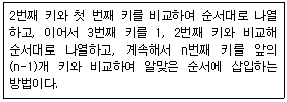
- Selection Sort
- Insertion Sort
- Bubble Sort
- Shell Sort
(정답률: 58%)
32. 다음 그래프의 인접 행렬(Adjacency Matrix)로 옳은 것은?
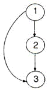
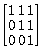
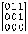
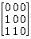
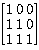
(정답률: 49%)
33. 스택을 이용하는 예로써 옳지 않은 것은?
- 운영체제의 작업 스케줄링
- 부프로그램 호출시 복귀주소를 저장할 때
- 인터럽트가 발생하여 복귀조소를 저장할 때
- 재귀(Recursive) 프로그램의 순서제어
(정답률: 60%)
34. 다음 그림에서 트리의 차수(degree)는?
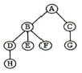
- 2
- 3
- 4
- 8
(정답률: 80%)
35. 데이터베이스의 특징으로 옳지 않은 것은?
- 실시간 접근성
- 계속적인 변화
- 주소에 의한 참조
- 동시 공용
(정답률: 62%)
36. 트리(Tree)의 특징이 아닌 것은?
- 비선형 자료구조를 표현하는 하나의 방법
- 노드와 연결선으로 구성되며, 노드간의 다양한 경로가 존재
- 계층구조를 갖는 데이터 표현에 적합하므로 회사 조직도 등의 표현시 사용
- 데이터의 정렬(Sort)이나 검색(Search) 등에 직접 응용
(정답률: 49%)
37. 다음 산술식을 Postfix로 옳게 표현한 것은?
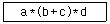
- **a+bcd
- *+a*bcd
- abc*+d*
- abc+*d*
(정답률: 61%)
38. 해싱에서 동일한 버켓 주소를 갖는 레코드들의 집합을 의미하는 것은?
- synonym
- collision
- slot
- bucket
(정답률: 73%)
39. 데이터베이스 설계 순서로 옳은 것은?
- 개념적설계 → 논리적설계 → 물리적설계
- 논리적설계 → 물리적설계 → 개념적설계
- 물리적설계 → 개념적설계 → 논리적설계
- 개념적설계 → 물리적설계 → 논리적설계
(정답률: 77%)
40. 트랜잭션의 특성 중 다음 설명에 해당하는 것은?
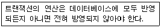
- Atomicity
- Consistency
- Isolation
- Durability
(정답률: 72%)
3과목: 전자계산기구조
41. 다음의 상태도(state diagram)에 맞는 상태표(state table)는? (단, 상태를 A, 입력은 x, 출력은 y라 한다.)
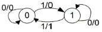
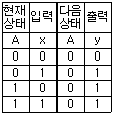
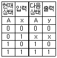
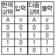
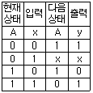
(정답률: 39%)
42. 다음은 어떤 마이크로 명령에 의해서 수행되는 경우인가?
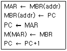
- BSA 명령
- STA 명령
- ISZ 명령
- ADD 명령
(정답률: 37%)
43. 메모리 버퍼 레지스터(MBR)의 설명으로 옳은 것은?
- 다음에 실행할 명령어의 번지를 기억하는 레지스터
- 현재 실행중인 명령의 내용을 기억하는 레지스터
- 기억장치를 출입하는 데이터가 일시적으로 저장하는 버퍼 레지스터
- 기억장치를 출입하는 데이터의 번지를 기억하는 레지스터
(정답률: 62%)
44. 인스트럭션 실행과정에서 한 단계씩 이루어지는 동작은?
- micro operation
- fetch
- control routine
- automation
(정답률: 40%)
45. 2의 보수 표현이 1의 보수 표현보다 더 널리 사용되고 있는 주요 이유는?
- 음수 표현이 가능하다.
- 10진수 변환이 더 용이하다.
- 보수 변환이 더 편리하다.
- 덧셈 연산이 더 간단하다.
(정답률: 35%)
46. 사용자 프로그램에 할당된 영역이 EC00h - FFFFh일 경우 사용 가능한 크기는 모두 몇 [KByte] 인가?
- 3[KByte]
- 4[KByte]
- 5[KByte]
- 6[KByte]
(정답률: 40%)
47. 대칭적 다중프로세서(SMP)에 대한 설명으로 틀린 것은?
- 능력이 비슷한 프로세서들로 구성됨
- 모든 프로세서들은 동등한 권한을 가짐
- 노드들 간의 통신은 message-passing 방식을 이용함
- 프로세서들이 기억장치와 I/O 장치들을 공유함
(정답률: 33%)
48. 중앙처리장치가 주기억장치보다 더 빠르기 때문에 프로그램 실행 속도를 중앙처리장치의 속도에 근접하도록 하기 위해서 사용되는 기억장치는?
- 가상 기억장치
- 모듈 기억장치
- 보조 기억장치
- 캐시 기억장치
(정답률: 58%)
49. 인터럽트를 발생시키는 모든 장치들을 인터럽트의 우선순위에 따라 직렬로 연결함으로써 이루어지는 우선순위 인터럽트 처리방법은?
- handshaking
- daisy-chain
- DMA
- polling
(정답률: 50%)
50. 캐시 기억장치에서 적중률이 낮아질 수 있는 매핑 방법은?
- 연관 매핑
- 세트-연관 매핑
- 간접 매핑
- 직접 매핑
(정답률: 41%)
51. 인스트럭션 세트의 효율성을 높이기 위하여 고려할 사항이 아닌 것은?
- 기억 공간
- 레지스터의 종류
- 사용빈도
- 주소지정 방식
(정답률: 44%)
52. 논리식
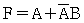
를 간소화한 식으로 옳은 것은?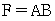
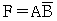
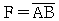
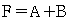
(정답률: 57%)
53. F(x, y, z)=Σ(1,3,4,5,7)를 간단히 나타내면?
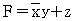
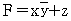
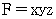
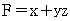
(정답률: 54%)
54. 인터럽트와 트랩을 비교 설명한 것 중 옳지 않은 것은?
- 트랩의 발생 시점은 동일한 입력에 대해서 일정하다.
- 인터럽트 발생에 대한 처리는 인터럽트 처리기(interrupt handler)가 담당한다.
- 인터럽트의 필요성은 CPU 실행과 입출력의 순차적인 실행에 있다.
- 인터럽트를 발생시킨 입출력 장치를 확인하는 방법으로 폴링과 벡터를 사용한다.
(정답률: 33%)
55. 인스트럭션이 수행될 때 주기억장치에 접근하려면 인스트럭션에서 사용한 주소는 주기억장치에 직접 적용될 수 있는 기억장소의 주소로 변환되어야 한다. 이 때, 주소로부터 기억장소로의 변환에 사용되는 것은?
- 사상 함수
- DMA
- 캐시 메모리
- 인터럽트
(정답률: 46%)
56. 플립플롭이 가지고 있는 기능은?
- Gate 기능
- 기억 기능
- 증폭 기능
- 전원 기능
(정답률: 61%)
57. 연산자 기능에 대한 명령어를 나타낸 것 중 옳지 않은 것은?
- 함수연산 기능 : ROL, ROR
- 전달 기능 : CPA, CLC
- 제어 기능 : JMP, SMA
- 입출력 기능 : INP, OUT
(정답률: 34%)
58. 가상(Virtual) 기억장치에 대한 설명이 아닌 것은?
- 주목적은 컴퓨터의 속도를 향상시키기 위한 방법이다.
- 주기억장치를 확장한 것과 같은 효과를 제공한다.
- 실제로는 보조기억장치를 사용하는 방법이다.
- 사용자가 프로그램 크기에 제한받지 않고 실행이 가능하다.
(정답률: 58%)
59. 동기고정식 마이크로 오퍼레이션 제어의 특성이 아닌 것은?
- 제어장치의 구현이 간단하다.
- 여러 종류의 마이크로 오퍼레이션 수행시 CPU 사이클 타임이 실제적인 오퍼레이션 시간보다 길다.
- 마이크로 오퍼레이션들의 수행시간의 차이가 큰 경우에 적합한 제어이다.
- 중앙처리장치의 시간이용이 비효율적이다.
(정답률: 40%)
60. 인스트럭션 수행시 유효 주소를 구하기 위한 메이저 상태는?
- FETCH 상태
- EXECUTE 상태
- INDIRECT 상태
- INTERRUPT 상태
(정답률: 53%)
4과목: 운영체제
61. 디스크 스케줄링 기법 중 다음 설명에 해당하는 것은?
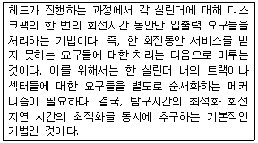
- SSTF 스케줄링
- Eschenbach 스케줄링
- FCFS 스케줄링
- N-SCAN 스케줄링
(정답률: 19%)
62. 구역성(Locality)에 관한 설명으로 옳지 않은 것은?
- Denning에 의해 증명된 이론으로 어떤 프로그램의 참조 영역은 지역화 된다는 것이다.
- 워킹 셋(Working Set) 이론의 바탕이 되었다.
- 시간 구역성은 어떤 프로세스가 최근에 참조한 기억장소의 특정 부분은 그 후에도 계속 참조할 가능성이 높음을 의미한다.
- 부 프로그램이나 서브루틴, 순환 구조를 가진 루틴, 스택 등의 프로그램 구조나 자료 구조는 공간 구역성의 특성을 갖는다.
(정답률: 48%)
63. 운영체제의 목적으로 거리가 먼 것은?
- 응답시간 단축
- 반환시간 증대
- 신뢰도 향상
- 처리량 향상
(정답률: 68%)
64. 분산 운영체제의 목적으로 거리가 먼 것은?
- 자원 공유
- 연산속도 향상
- 신뢰성 증대
- 보안성 향상
(정답률: 65%)
65. UNIX 파일시스템에서 각 파일이나 디렉토리에 대한 모든 정보를 저장하고 있는 블록은?
- 부트 블록
- 슈퍼 블록
- 데이터 블록
- I-node 블록
(정답률: 52%)
66. 빈 기억공간의 크기가 20K, 16K, 8K, 40K일 때 기억장치 배치 전략으로 "Worst Fit"을 사용하여 17K의 프로그램을 적재할 경우 내부 단편화의 크기는?
- 3K
- 23K
- 44K
- 67K
(정답률: 52%)
67. 스레드(Thread)에 대한 설명으로 옳지 않은 것은?
- 프로세스 내부에 포함되는 스레드는 공통적으로 접근 가능한 기억장치를 통해 효율적으로 통신한다.
- 다중 스레드 개념을 도입하면 자원의 중복 할당을 방지하고 훨씬 작은 자원으로도 작업을 처리할 수 있다.
- 하나의 프로세스를 구성하고 있는 여러 스레드들은 공통적인 제어 흐름을 가지며, 각종 레지스터 및 스택 공간들은 모든 스레드들이 공유한다.
- 하나의 프로세스를 여러 개의 스레드로 생성하여 병행성을 증진시킬 수 있다.
(정답률: 45%)
68. 파일 디스크립터(File Descriptor)의 내용으로 거리가 먼 것은?
- 파일 수정 시간
- 파일의 이름
- 파일에 대한 접근 횟수
- 파일 오류 처리 방법
(정답률: 61%)
69. FIFO 교체 알고리즘을 사용하고 페이지 참조의 순서가 다음과 같다고 가정한다면 할당된 프레임의 수가 4개일 때 몇 번의 페이지 부재가 발생하는가? (단, 초기 프레임은 모두 비어 있다고 가정한다.)
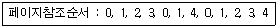
- 7
- 8
- 9
- 10
(정답률: 44%)
70. UNIX 운영체제의 특징과 거리가 먼 것은?
- 높은 이식성
- 사용자 위주의 시스템 명령어 제공
- 쉘 명령어 프로그램 제공
- 파일 시스템의 리스트 구조
(정답률: 52%)
71. 운영체제가 수행하는 기능에 해당하지 않는 것은?
- 사용자들 간에 데이터를 공유할 수 있도록 한다.
- 사용자와 컴퓨터 시스템 간의 인터페이스 기능을 제공한다.
- 자원의 스케줄링 기능을 제공한다.
- 목적 프로그램과 라이브러리, 로드 모듈을 연결하여 실행 가능한 로드 모듈을 만든다.
(정답률: 58%)
72. 하이퍼큐브에서 하나의 프로세서에 연결되는 다른 프로세서의 수가 4개일 경우 필요한 총 프로세서의 수는?
- 4
- 8
- 16
- 32
(정답률: 62%)
73. 다중 처리기 운영체제 형태 중 주/중(Master/Slave) 처리기에 대한 설명으로 옳지 않은 것은?
- 주 프로세서가 운영체제를 수행한다.
- 주 프로세서와 종 프로세서가 모두 입ㆍ출력을 수행하기 때문에 대칭 구조를 갖는다.
- 주 프로세서가 고장이 나면 시스템 전체가 다운된다.
- 하나의 프로세서를 주 프로세서로 지정하고, 다른 처리기들은 종 프로세서로 지정하는 구조이다.
(정답률: 41%)
74. 선점 기법과 대비하여 비선점 스케줄링 기법에 대한 설명으로 옳지 않은 것은?
- 모든 프로세서들에 대한 요구를 공정히 처리한다.
- 응답 시간의 예측이 용이하다.
- 많은 오버헤드(Overhead)를 초래할 수 있다.
- CPU의 사용 시간이 짧은 프로세스들이 사용 시간이 긴 프로세스들로 인하여 오래 기다리는 경우가 발생할 수 있다.
(정답률: 43%)
75. 은행원 알고리즘은 교착상태 해결 방법 중 어떤 기법에 해당하는가?
- Prevention
- Recovery
- Avoidance
- Detection
(정답률: 63%)
76. 다음 설명의 ( ) 안 내용으로 가장 적합한 것은?
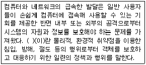
- 보증
- 제어
- 암호
- 보안
(정답률: 63%)
77. 현재 헤드의 위치가 50에 있으며, 디스크 대기 큐에 다음과 같은 순서의 액세스 요청이 대기 중일 때, C-SCAN 기법을 사용한다면 제일 먼저 서비스 받는 트랙은?
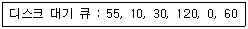
- 10
- 30
- 55
- 120
(정답률: 35%)
78. UNIX에서 파일의 사용 허가를 정하는 명령은?
- cp
- chmod
- cat
- ls
(정답률: 60%)
79. 여러 사용자들이 공유하고자 하는 파일들을 하나의 디렉토리 또는 일부 서브트리에 저장해 놓고 여러 사용자들이 이를 같이 사용할 수 있도록 지원하기 위한 가장 효율적인 디렉토리 구조는?
- 비순환 그래프 디렉토리 구조
- 트리 디렉토리 구조
- 1단계 디렉토리 구조
- 2단계 디렉토리 구조
(정답률: 40%)
80. 상호배제(Mutual Exclusion) 기법을 사용하여 임계영역(Critical Region)을 보호하였다. 다음 설명 중 옳지 않은 것은?
- 어떤 프로세스가 임계영역 내의 명령어 실행 중 인터럽트(Interrupt)가 발행하면 이 프로세스는 실행을 멈추고, 다른 프로세스가 이 임계영역 내의 명령어를 실행한다.
- 임계영역 내의 프로그램 수행 중에 교착상태(Deadlock)가 발생하면 교착상태가 해제될 때까지 임계영역을 벗어날 수 없다. 따라서 임계영역 내의 프로그램에서는 교착상태가 발생하지 않도록 해야 한다.
- 임계영역 내의 프로그램에서 무한반복(Endless Loop)이 발생하면 임계영역을 탈출할 수 없다. 따라서 임계영역내의 프로그램에서는 무한반복이 발생하지 않도록 해야 한다.
- 여러 프로세스들 중에 하나의 프로세스만이 임계영역을 사용할 수 있도록 하여 임계영역에서 공유 변수 값의 무결성을 보장한다.
(정답률: 39%)
5과목: 마이크로 전자계산기
81. 입출력 인터페이스 회로의 기본적인 기능이 아닌 것은?
- 데이터 형식의 변환
- 전송의 동기 제어
- 신호 레벨의 정확성 확보
- 입출력 장치의 상태 조사
(정답률: 35%)
82. 컴퓨터가 PC 없이 구성되어 있다고 가정하자. 대신에 명령어는 OP 코드, operand 번지, 다음 수행 명령의 번지로 구성되어 있다. 56개의 명령어를 가지고 있으며 32768워드의 기억장치를 가지고 있다. 이 마이크로컴퓨터의 명령어 형태로 가장 옳은 것은?
- OP : 8bit, addr1 : 12bit, addr2 : 12bit
- OP : 7bit, addr1 : 13bit, addr2 : 13bit
- OP : 6bit, addr1 : 15bit, addr2 : 15bit
- OP : 5bit, addr1 : 16bit, addr2 : 16bit
(정답률: 59%)
83. 마이크로프로그램에 대한 설명 중 틀린 것은?
- 사용자 프로그램의 각 명령어가 이것에 의해 미세동작으로 구분되어 수행된다.
- 사용자가 임의로 변경할 수 없는 것이 대부분이다.
- control unit 내에 저장되어 있다.
- 명령어(micro-instruction)의 비트 수는 프로세서가 사용하는 데이터의 비트 수와 같아야 한다.
(정답률: 26%)
84. 제어 프로그램의 중추적 기능을 담당하는 프로그램으로서 처리 프로그램의 실행 과정과 시스템 전체의 동작 상태를 감독하고 지원하는 기능을 수행하는 제어 프로그램은?
- data management program
- supervisor program
- system control program
- status control program
(정답률: 74%)
85. IOP(Input-Output Processor)에 관한 내용 중 틀린 것은?
- IOP는 여러 주변장치와 memory 장치 사이의 data 전송을 위한 통로를 제공한다.
- 주변장치의 data 형식은 memory와 CPU의 data 형식이 같기 때문에 IOP는 이를 재구성할 필요가 없어 편리하게 data를 전송시킬 수 있다.
- CPU는 IOP 동작을 시작하게 하는 일을 맡고 있으나 CPU에 의해서 개시된 입력명령은 IOP에서 실행된다.
- data가 전송되고 있는 동안 IOP는 발생하는 모든 error의 상태를 알리는 status word를 준비한다.
(정답률: 60%)
86. 베이직과 같은 고급 언어로 작성된 원시 프로그램을 직접 실행하는 프로그램은?
- 로더(Loader)
- 인터프리터(Interpreter)
- 어셈블러(Assembler)
- 기계어(Machine Language)
(정답률: 64%)
87. 논리 블록간의 프로그램 가능 논리 교환 기능을 가진 SPLD를 근간으로 하고 있으며, 전기적 소거 및 프로그램 가능 읽기 전용 기억장치 (EEPROM)나 플래시 메모리, 정적기억장치 (SRAM)를 사용하는 것은?
- PAL
- CPLD
- FPGA
- ROM
(정답률: 55%)
88. 어셈블리(assembly) 언어로 작성된 source 프로그램의 각 문장은 3개의 필드(field)로 구성된다. 다음 중 필드(field)가 아닌 것은?
- 어드레스(address)
- 레이블(label)
- 오퍼랜드(operand)
- 코멘트(comment)
(정답률: 24%)
89. 묵시적 주소지정 방식을 사용하는 산술 명령어는 주로 어떤 레지스터에 대하여 연산을 수행하는가?
- 누산기
- MAR
- PC
- SP
(정답률: 58%)
90. 다음 ( ) 안에 들어갈 용어로 적당한 것은?
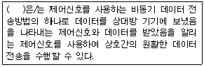
- 스트로브(strobe)
- 핸드세이킹(handshaking)
- 폴링(polling)
- 페이징(paging)
(정답률: 46%)
91. 입출력 모듈 설계시 고려 사항이 아닌 것은?
- 연산 성능
- 타이밍과 제어
- 데이터 버퍼링
- 오류 검출과 정정
(정답률: 39%)
92. 컴퓨터에서 사용되는 보조기억장치의 특징이 아닌 것은?
- 대용량 기억장치이다.
- 비트당 가격이 주기억장치에 비해 비싸다.
- 정보처리 속도가 주기억장치보다 느리다.
- 대형 프로그램을 저장시킬 수 있다.
(정답률: 58%)
93. 입출력장치의 주소가 기억장치의 주소와 독립적인 입출력장치는?
- isolated I/O
- memory mapped I/O
- standard I/O
- multiple I/O
(정답률: 60%)
94. 기계어 프로그램을 받아들여 상대 번지를 절대 번지로 바꿔 기억장소에 할당하고, 여러 개의 프로그램을 연결하여 컴퓨터가 실행할 수 있는 상태로 만드는 프로그램은?
- 디버깅 프로그램
- 로더 프로그램
- 진단 프로그램
- 운영체제
(정답률: 67%)
95. 실행 중에 CPU에 의해 사용되는 레지스터인 PSWR에 대한 설명으로 틀린 것은?
- 실행된 명령어의 길이 저장
- 인터럽트 상태 표시
- 다음 실행될 명령어의 주소 저장
- 전송할 데이터의 일시적 저장
(정답률: 39%)
96. 메모리로부터 명령을 읽어오는 과정에서 관계없는 것은?
- PC(Program Counter)
- MAR(Memory Address Register)
- MBR(Memory Buffer Register)
- Accumulator
(정답률: 65%)
97. 시프트 레지스터(shift register)의 입출력 방식 중 시간이 가장 적게 걸리는 것은?
- 직렬입렵-직렬출력
- 직렬입력-병렬출력
- 병렬입력-직렬출력
- 병렬입력-병렬출력
(정답률: 56%)
98. RAM은 SRAM과 DRAM으로 분류할 수 있다. SRAM의 특징이 아닌 것은?
- 전원이 꺼지면 저장된 정보가 지워진다.
- 플립플롭을 사용한다.
- DRAM에 비해 집적도가 낮다.
- 재충전이 필요하다.
(정답률: 61%)
99. 직접 실행 가능한 형태의 프로그램은?
- 상대 형식 어셈블리 언어 프로그램
- 절대 형식 어셈블리 언어 프로그램
- 상대 형식 기계어 프로그램
- 절대 형식 기계어 프로그램
(정답률: 43%)
100. 레지스터의 역할이 아닌 것은?
- 인스트럭션의 저장
- 데이터의 저장
- 주소의 저장
- 제어신호의 저장
(정답률: 31%)